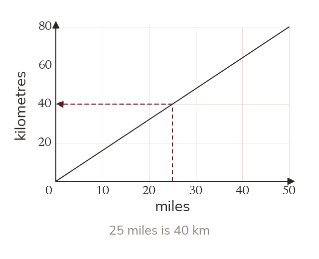

A straight line through the origin
A conversion graph is a straight line through The two units are in direct proportion. Read across to the line, then to the other axis.
A conversion graph is a straight line through because the two units are in direct proportion. It converts both ways: across to the line, then to the other axis.